Day 31｜比臉大炸豬排、三年半的步行者
2026 年 6 月 20 日 · Negreira → Santa Mariña · 21km
第 31 天，在加利西亞的濃霧中啟程。晨光微微透過雲層，眼前的一切，寧靜又優美。
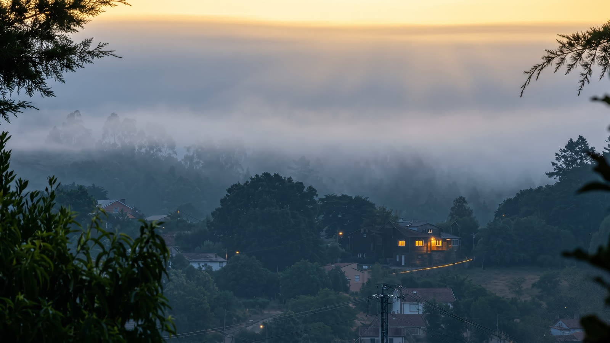
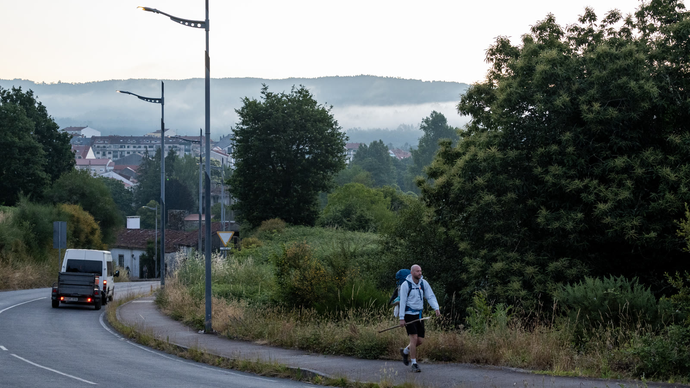
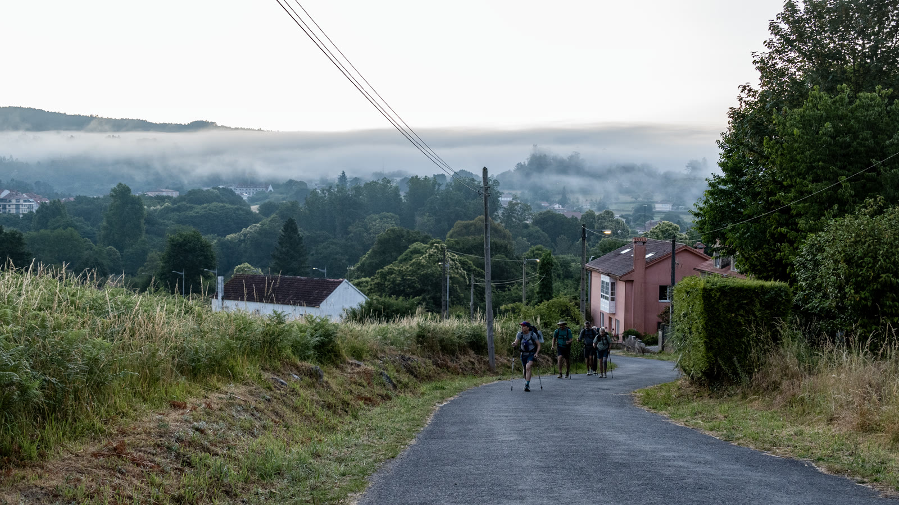
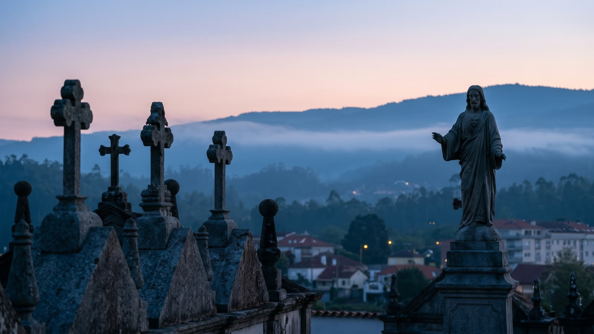
走著走著，太陽出來了。日出穿雲灑光，俯瞰石屋村鎮；陽光穿透大樹枝葉，草地還帶著薄霧——加利西亞的早晨，永遠有驚喜。
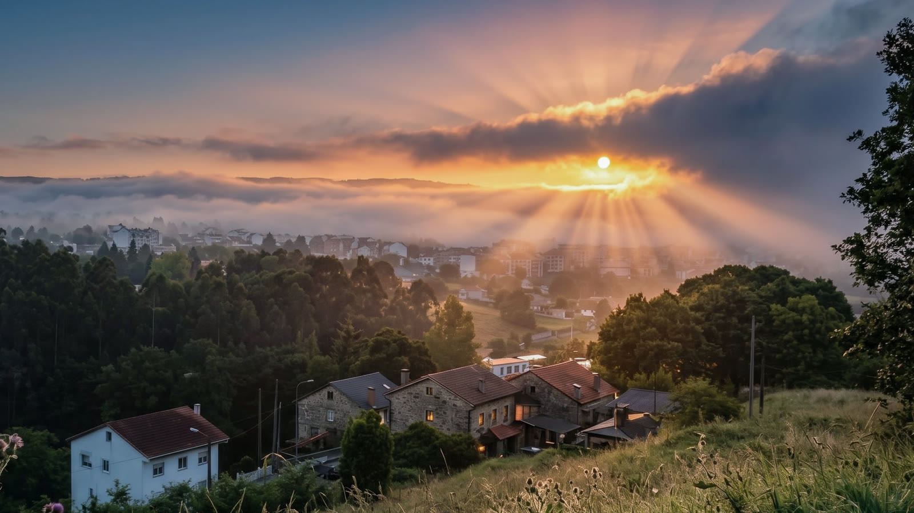
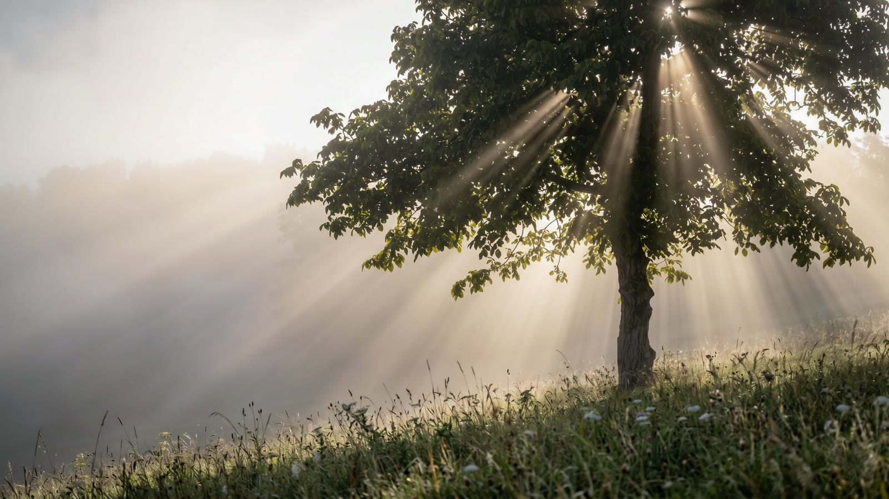
在加利西亞的鄉間，偶爾還得跟迎面而來的牛群借個路——兩頭牛迎面走來擋住鄉間小路，氣場比誰都強。
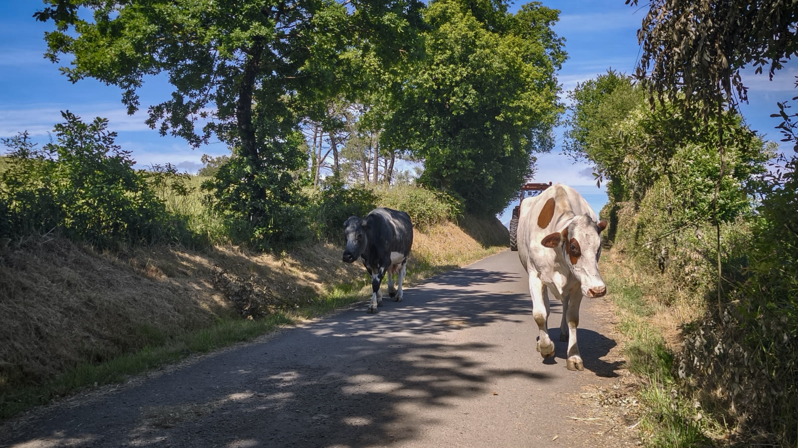
一路上上下下，太陽很大。經過加利西亞的石柱路標，扇貝配上黃色箭頭，方向沒問題；眼前是開闊大草原，頂著烈日爬碎石陡坡——這就是加利西亞日常。
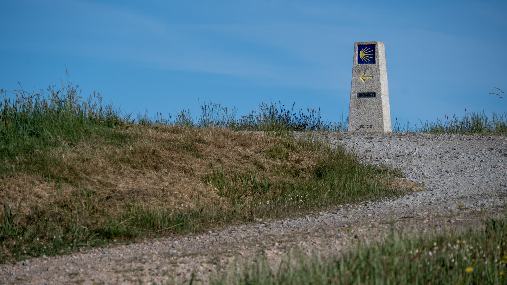
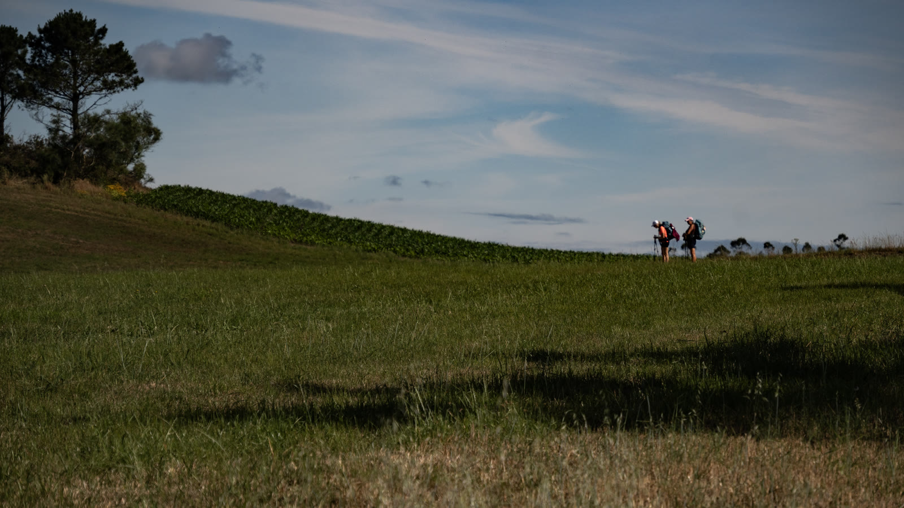
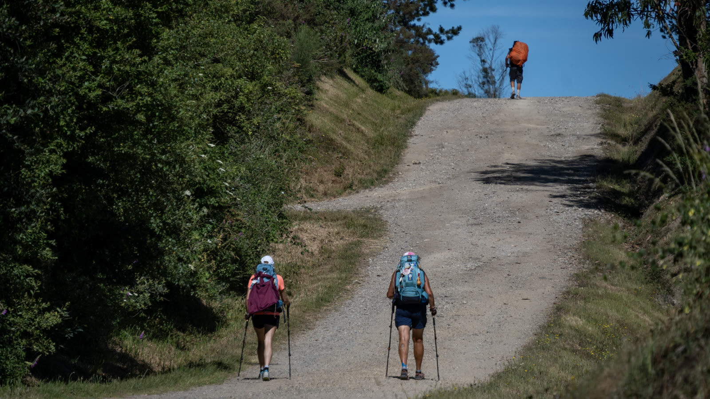
好險今天距離不長，21 公里，順利來到今晚落腳的庇護所——這裡本身就是一間餐廳。卸下裝備，大口吃肉、大口喝酒：火腿、沙拉煎蛋配加利西亞啤酒，炸肉排佐紅酒。沒有什麼比這更滿足——這絕對是朝聖路上最頂級的奢侈。
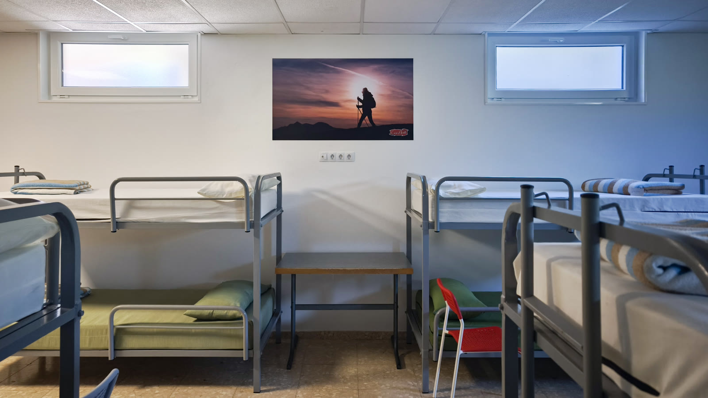
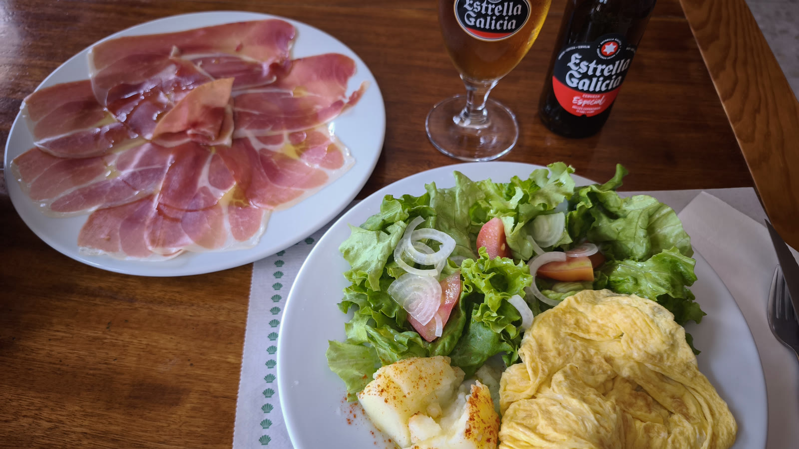
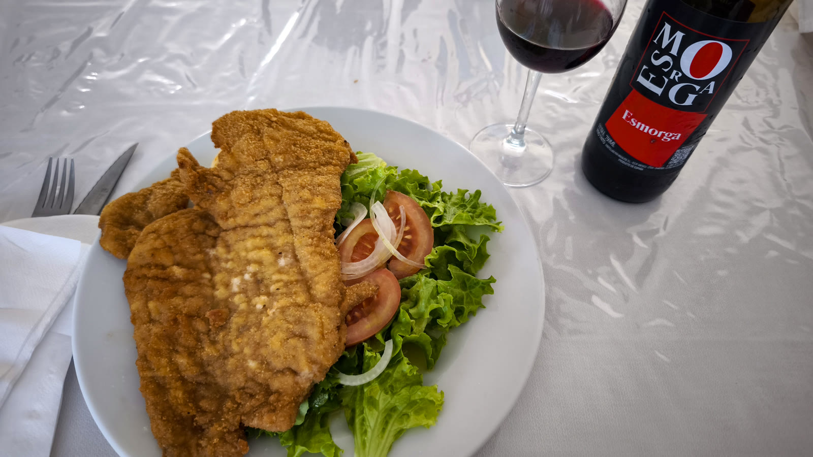
一位朝聖者走過來請我幫忙裝水。聊過才知道，他 55 歲，放下一切，從荷蘭連續走了三年多來到這裡。沒有住庇護所，餓了吃野果，累了睡樹上。他把人生所有的重量，都縮減到身上那個背包裡。
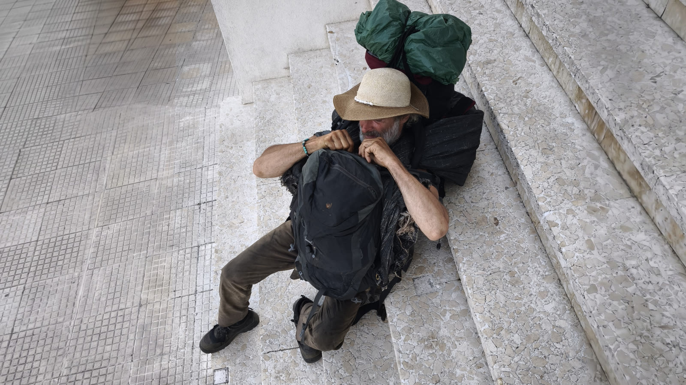
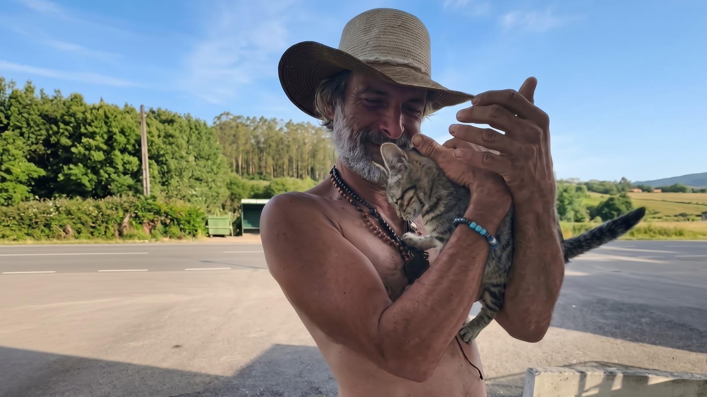
他說：「一直走，心就很平靜。」看著他展示那些密密麻麻的朝聖印章，很震撼。原來，有人走路是為了到達目的地；而有人走路，是為了不必再停下來。

📚 朝聖者小百科：Hórreo 穀倉
走在加利西亞，路邊常會看到這種架高的石造小屋——Hórreo（奧雷奧），是加利西亞特有的穀倉。架高防潮、石柱頂的圓盤防止老鼠攀爬，造型可愛又有智慧。看到的 Hórreo 越多，代表你越深入加利西亞的心臟。
🐄 遇到牛群別急，慢慢繞行，牠們比你更淡定
🍽️ 庇護所附設餐廳通常物超所值，別錯過朝聖者晚餐
| 咖啡＋香蕉＋麵包 | €4.0 |
| Bar 啤酒 | €2.5 |
| 超市：優格、紅酒、柳橙汁等 | €9.0 |
| 晚餐分攤：洋蔥炒牛肉＋啤酒蝦＋義大利麵 | €5.0 |
| 住宿 | €16.0 |
| 合計 | €36.5 |
🎬 對應 Vlog EP8｜比聖地牙哥更震撼！徒步前往世界盡頭Fisterra，0KM石碑與大西洋日落